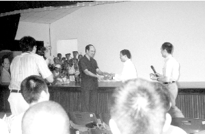
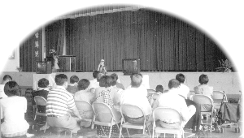
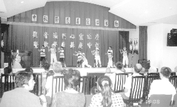
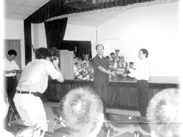
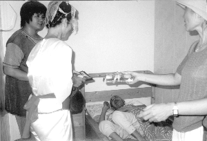
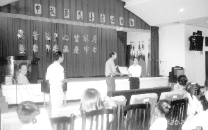

| Panorama d'événements |
|  |
Don de 10 000 $NT de l'Association du Maître Suprême Ching Hai à la prison Kinmen, située sur une île près de Formose. |
|  |
Séminaire à l'auditorium de l'école primaire Kinhu de Kinmen. |
|  |
Spectacle présenté au Centre Familial Utopia par de très jeunes initiés. |
|  | Présentation d'une médaille par le surveillant en chef de la prison Kinmen à l'Association du Maître Suprême Ching Hai pour commémorer l'aide aux prisonniers. |
|  | Visite aux vieillards handicapés du Centre Familial Utopia. |
|  | Le Centre Familial Utopia de Kinmen remet un certificat de remerciement à l'Association du Maître Suprême Ching Hai. |